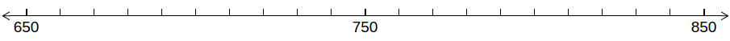
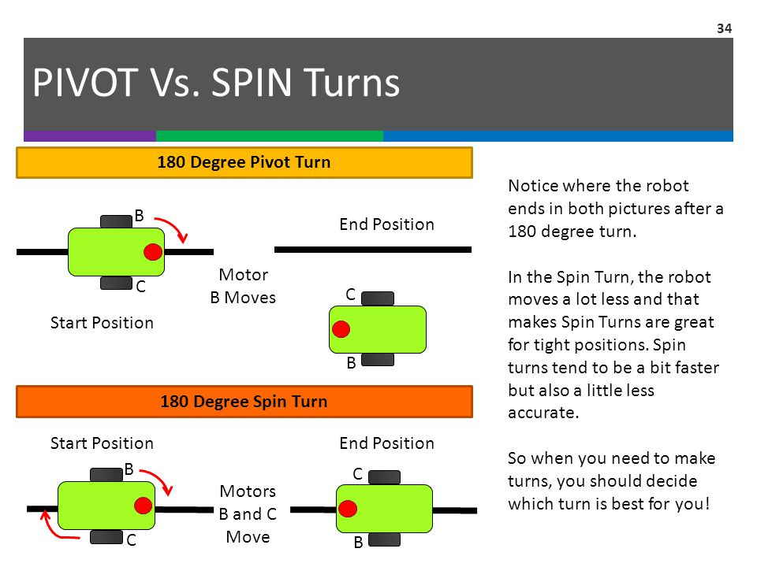

Movement¶
Moving the wheels of the robot is fairly simple. We will use the PULSOUT keyword to send a signal to the wheels to turn. Each wheel has a unique ID and takes in a range of “power values” for how fast the wheel spins and in what direction.
| Wheel | ID | Power Value |
|---|---|---|
| Right | 13 | 650 <=> 850 |
| Left | 12 | 650 <=> 850 |
The power values dictate how fast the wheel spins in a certain direction. Think of a number line where 650 and 850 are at the ends and 750 is the center.
Consider 750 to be the neutral value. This means if you set a wheel to a value of 750 it shouldnt move.
If you set a wheel to either 650 or 850 then it will move at full power in a certain direction.
| Power Value | Direction |
|---|---|
| 650 | Clockwise |
| 750 | None |
| 850 | Counter-Clockwise |
Moving Forward¶
In order to move the robot forward we need to spin each wheel either counter-clockwise or clockwise but not the same. Running this code below will make the wheels move in a very short burst.
PULSOUT 13, 850
PULSOUT 12, 650
To continuously go forwards for a small time we program it like so:
1 2 3 4 5 6 | i VAR WORD
FOR i=1 TO 100
PULSOUT 13, 850
PULSOUT 12, 650
NEXT
|
Moving Backwards¶
We have the same idea as moving forwards except the values are flipped.
PULSOUT 13, 650
PULSOUT 12, 850
And again to continuously go backwards for a small time we program it like so:
1 2 3 4 5 6 | i VAR WORD
FOR i=1 TO 100
PULSOUT 13, 650
PULSOUT 12, 850
NEXT
|
Turning¶
There are 2 approaches to turning your robot.
- Pivot Turn
- Spin Turn
This diagram helps to explain the key differences:
Ultimately what type of turns you want to perform is up to you. Just make sure you’re consistent with the type of turns you perform.
Pivot Turn¶
Depending on the wheel you want to pivot about influences what code to use.
Pivot about Left Wheel:
1 2 3 4 5 | i VAR WORD
FOR i=1 TO 100
PULSOUT 12, 650
NEXT
|
Pivot about Right Wheel:
1 2 3 4 5 | i VAR WORD
FOR i=1 TO 100
PULSOUT 13, 650
NEXT
|
Spin Turn¶
Spin turns move both wheels in the same direction either clockwise or counter-clockwise.
Spinning in Clockwise direction:
1 2 3 4 5 6 | i VAR WORD
FOR i=1 TO 100
PULSOUT 13, 650
PULSOUT 12, 650
NEXT
|
Spinning in Counter-Clockwise direction:
1 2 3 4 5 6 | i VAR WORD
FOR i=1 TO 100
PULSOUT 13, 850
PULSOUT 12, 850
NEXT
|
Practice¶
I’d like to challenge you to program your robot to move forward, spin in some direction, and then backup with what you’ve learned so far. In addition, you should try to practice more by programming your own little movement sequence.